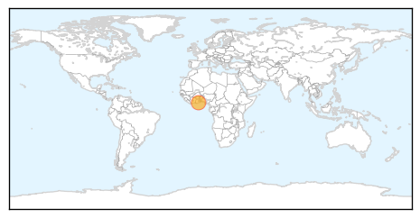
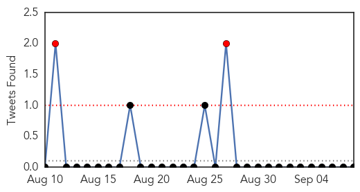

Cholera
30-Day Web Trend
1 alerts, 0 warnings

30-Day Twitter Trend
0 alerts, 0 warnings
Article Locations
Article Confidences

Top Articles:
Top Tweets:
-
No tweets found for Sep 08, 2014
Influenza
30-Day Web Trend
0 alerts, 0 warnings
30-Day Twitter Trend
4 alerts, 0 warnings

Article Locations
Article Confidences
Top Articles:
- 1.000
- Enterovirus crops up in Iowa; can be risky for kids
- 0.998
- Caution over flu spike
- 0.995
- ‘Missouri Medicine’ Turns to SLU for Vaccine Research Insights
- 0.995
- Rare respiratory virus confirmed at Children's Hospital of Colorado
- 0.988
- Peramivir Could Help Rid The World Of The Flu
- 0.986
- Enterovirus D-68: Respiratory Illness In Midwest
- 0.979
- OU Children's Hospital: 150 kids diagnosed with rhinovirus, enterovirus in August
- 0.967
- Colorado among 10 states asking CDC for help with enterovirus 68
- 0.959
- Hundreds of children in U.S. states stricken by respiratory illness
- 0.953
- Johnson City Press: Update: Niswonger CEO says staff 'well-prepared' for viral strain
- 0.939
- Fort Collins pediatricians react to respiratory virus
- 0.904
- Mystery Illness Strikes Hundreds of Children — Charisma News
Top Tweets:
-
No tweets found for Sep 08, 2014